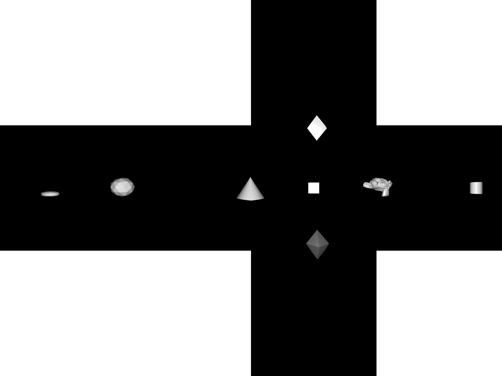
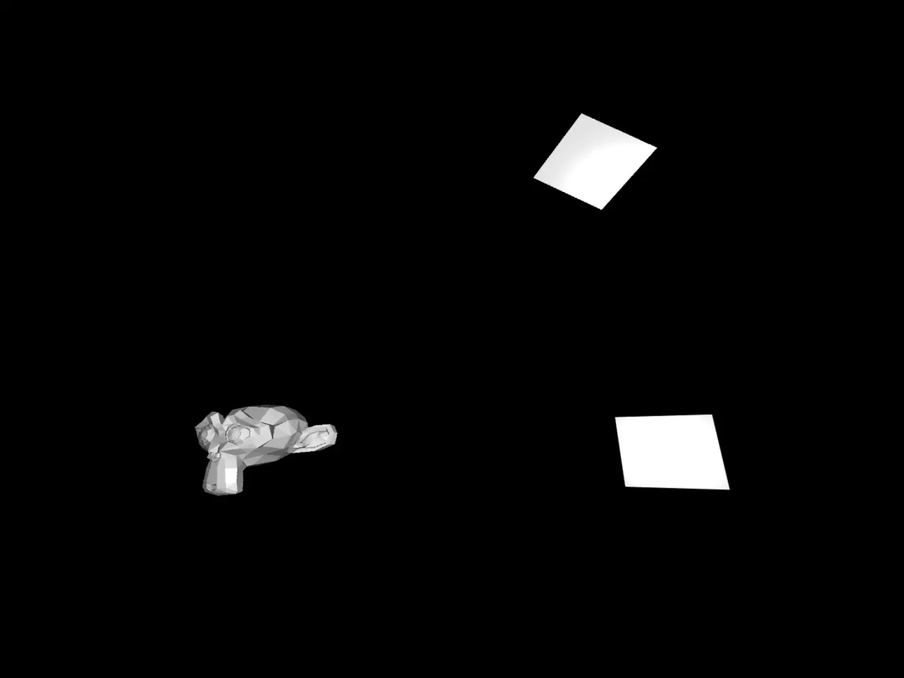
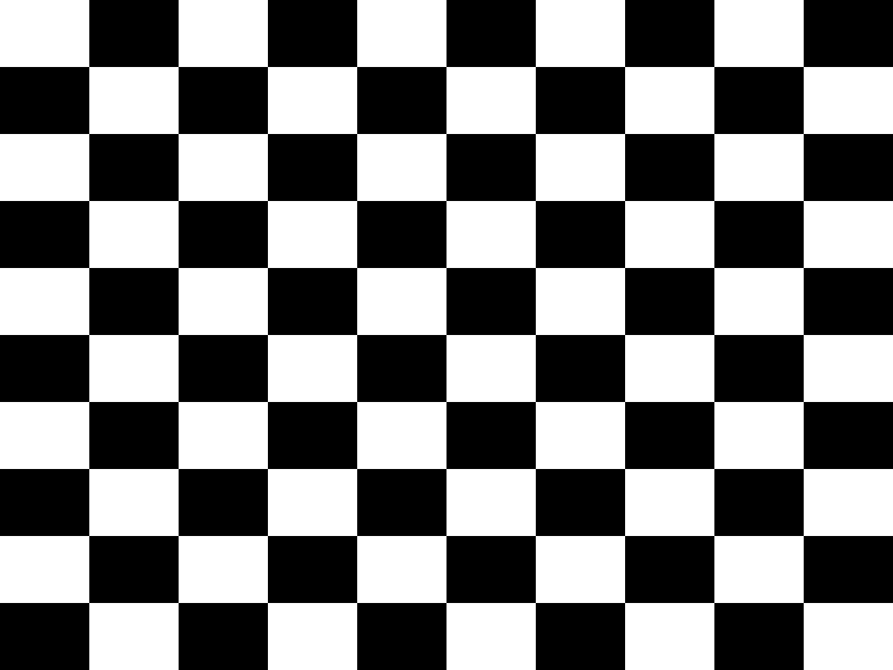
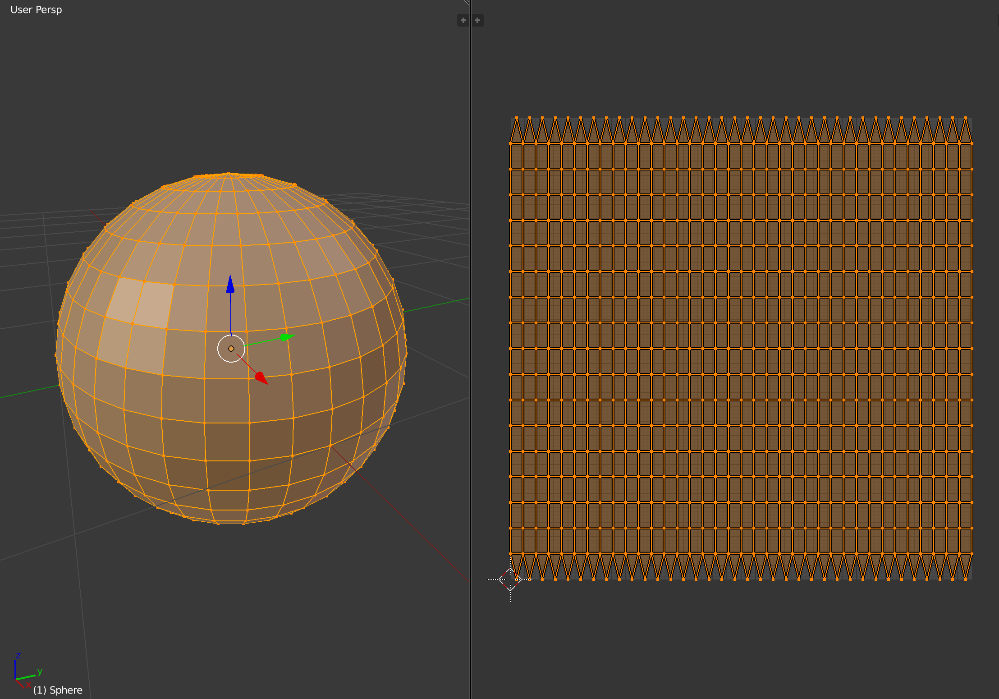
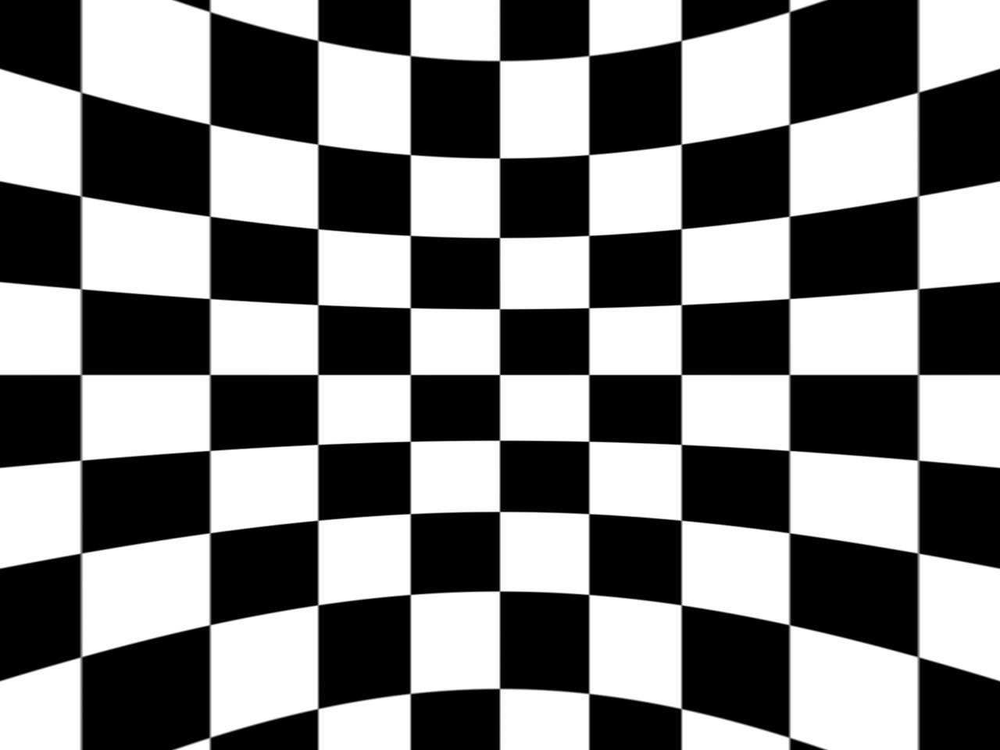
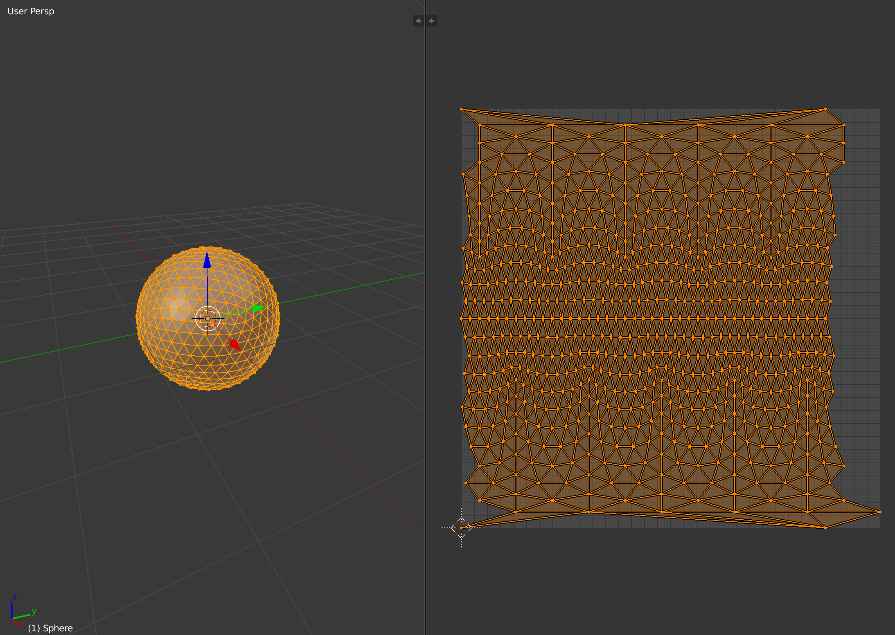
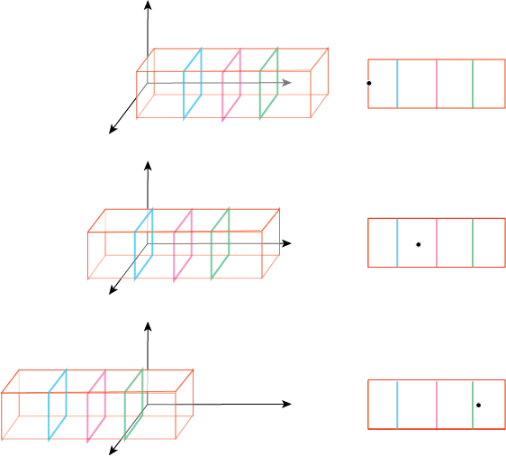
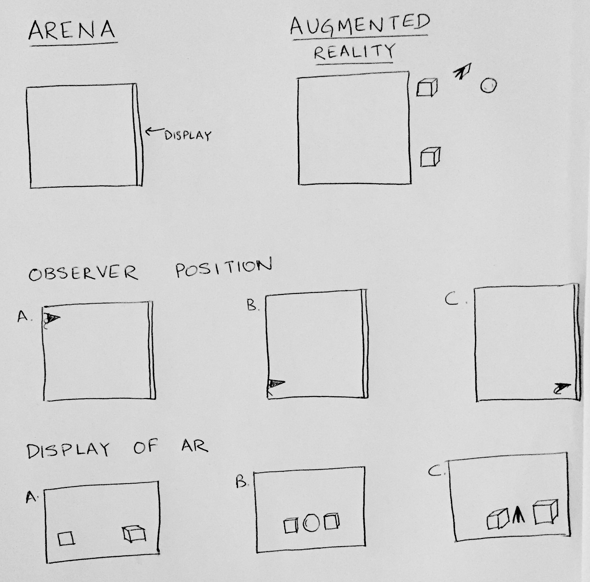

Display Environments
Visual neuroscience is almost always carried out in eye-centric coordinates, which defines stimuli in terms of visual angle subtended at the eye. This helps keep the definition of the image that reaches the retina consistent. However, visual displays work in pixel coordinates (with specific physical characteristics) and to draw accurate stimuli one has to calculate the conversion between the two coordinate frames. This requires a new transform function to be calculated for any display, and few programs are available to help with this.
In the following sections we describe the main assumptions and design decisions in BonVision for dealing with a broad family of visual stimuli, both 2D and 3D.
Environmental mapping
One of the major goals for BonVision was to unify the specification of both 2D and 3D visual environments into a common representation that would allow sharing experiments across multiple display configurations, including domes, toruses, display grids and other geometrical arrangements.
To achieve this, the main design decision was to decouple the Display environment from the Stimulus Generation logic. This allows users of BonVision to write tasks in standard units (either degrees of visual field for 2D or metric units for 3D), and then run them unmodified on any correctly calibrated rig.
We use cube mapping as a way to efficiently specify the entire surrounding environment of an experimental subject, both for 2D and 3D environments. In this technique, 6 different faces of a cube, each covering exactly a 90º field of view volume, are combined to describe the entire 360º environment (a.k.a. a skybox):

At runtime, each screen becomes a window that looks out into that surrounding environment, with each pixel uniquely specifying a direction vector out into the world. In a cubemap, this direction vector is used to sample the correct pixels from the cubemap textures, therefore projecting onto the screen the corresponding portion of the visual field.

Once the cube mapping rendering pipeline is in place, we can very efficiently generate an arbitrary number of projections into the visual space for each display in the experiment. The remaining challenge is then how to generate the 6 faces of the cubemap in a way that accurately represents the visual field surrounding the subject.
3D Stimuli
For 3D scenes, there is a straightforward solution: render the visual scene once for each face of the cube, with a perspective 90º field of view, as seen from the observer. Each rendered perspective will fill exactly one face of the cube. For example:

Using the cube mapping pipeline, one can then point a viewing window at any direction and get a correct rendition of the surrounding environment at those pixels:

2D Stimuli
For 2D scenes, such as those containing gabor patches, checkerboards, gratings, random dots and so on, we would like to specify our environments in an orthonormal space, where X and Y represent longitude and latitude, respectively, in degrees of visual field. For example, below is a checkerboard stimulus covering 100 degrees of visual field horizontally and vertically, where each square subtends 10 degrees:

To correctly display this environment using the cubemap rendering approach, we need to map this 2D orthonormal space into a 3D spherical environment, which we can then cubemap the same way as for 3D environments. This is essentially the reverse cartographer's problem of specifying a map projection of the sphere onto a planar surface.
Unfortunately, there is no perfect way of mapping a sphere onto a plane. Different transformations will preserve different features, e.g. area-preserving, distance-preserving, shape-preserving, etc, and in general we will always need to tradeoff one against the other. For example, a popular mapping is the equirectangular, or cylindrical mapping:

This projection features asymmetrical distortion in both axes, which preserves the meridian lines as vertical lines in the mapping, and introduces distortion around the poles:

Other projections remove the distortion at the poles by distributing it across different portions of the image. For example, the icosphere tiles the surface using multiple triangle subdivisions:

The disadvantage is that the arrangement of the planar mapping is not orthonormal anymore, especially at the poles. At the moment BonVision makes use of a cylindrical projection, but improvements are being discussed at the moment to support different kinds of spherical mapping strategies to cover a larger number of cases.
More details on spherical mapping from the point of view of modelling software
Virtual Reality vs Augmented Reality
- Shawn's note - This needs more clarity as they both seem to be the same (fixed window/eye, objects/environment move around).
Virtual Reality (VR)
VR can be easily defined as a situation where the eye, and the screens (windows) are fixed positions, while all the objects (or VR environment) moves across the eye.

Example rendering to be added here
For Augmented Reality (AR)
This is a scenario where, generally, the screens remain in a fixed position and the animal can move around. Since we have an eye-centric coordinate frame, the objects and the screen move around to generate an AR.

Example rendering to be added here